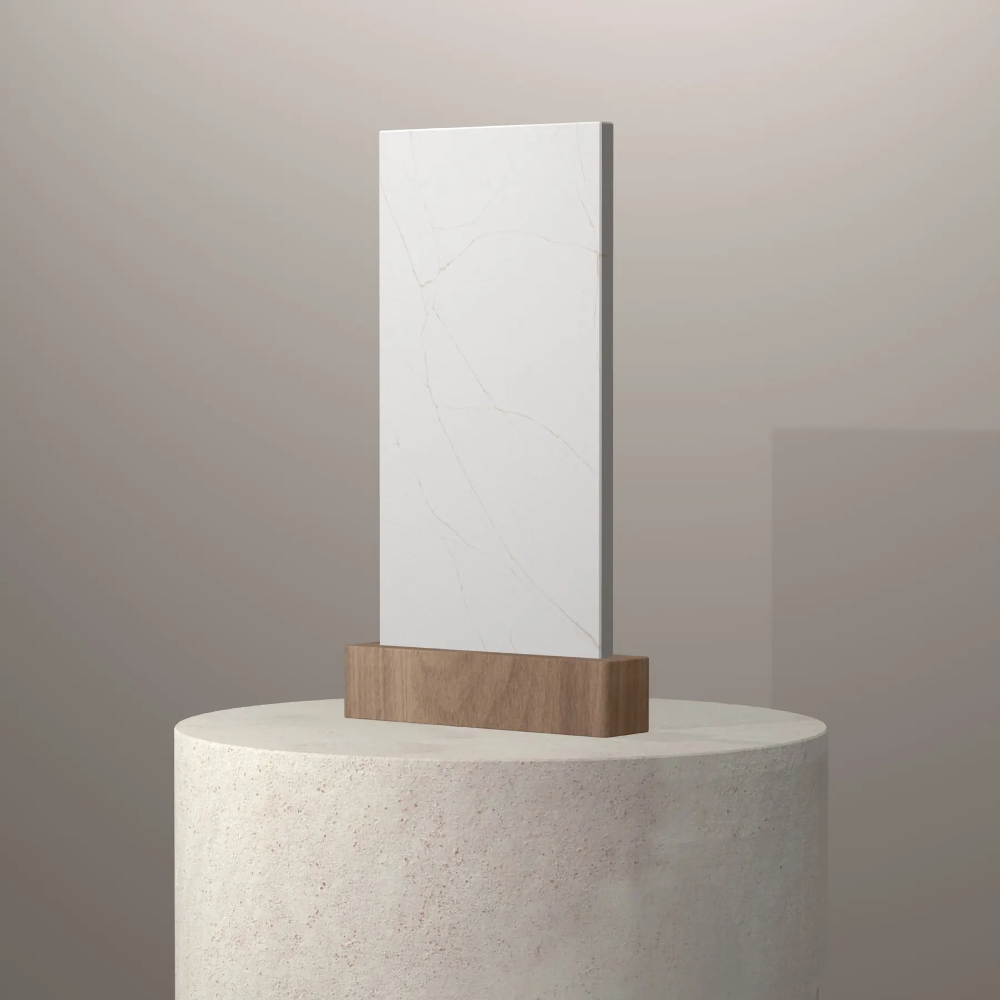

MStone Surfaces
Minéralis, l'alternative au quartz en verre recyclé, façonnée à Mafra
Le plan de travail Minéralis offre le rendu d'un quartz haut de gamme avec une composition pensée autrement : une large part de verre recyclé et peu de silice. C'est la nouveauté que nous mettons en avant auprès des cuisinistes et agenceurs, fabriquée sur mesure dans notre atelier de Mafra à partir de vos plans.
Le plan de travail Minéralis
La surface minérale composite qui remplace le quartz. Chaque tranche intègre 85 % de verre recyclé de première production — récupéré lors de sa première fabrication, jamais du verre de consommation — avec une faible teneur en silice, pensée pour ceux qui découpent et posent la matière. Nous la façonnons sur mesure dans notre atelier de Mafra.
Minéralis — composition certifiée
- 85 % de verre recyclé de première production
- Faible teneur en silice
- Résiste à 180 °C
- Garantie 20 ans
- ISO 14021, conforme REACH, sans substance SVHC
- 19 coloris
- Verre recyclé
- 85 %
- Résistance chaleur
- 180 °C
- Garantie
- 20 ans
- Plus sûr à travailler
- Faible silice
Finitions et formats
- 19 coloris
- Tranches 3 200 × 1 600 mm
- ISO 14021 · REACH
Coloris Minéralis — sélection
16 coloris disponibles, à voir aussi en vrai dans notre usine de Mafra sur rendez-vous.
 Calacatta TajVeinage sableFond blanc au veinage sable, l'esprit calacatta dans une teinte chaude.
Calacatta TajVeinage sableFond blanc au veinage sable, l'esprit calacatta dans une teinte chaude.
Calacatta Attera GoldVeines doréesCalacatta au veinage doré, idéal en plan de travail et crédence assortie. FiorellaColoris MinéralisUn coloris Minéralis lumineux pour cuisines et salles de bain.
FiorellaColoris MinéralisUn coloris Minéralis lumineux pour cuisines et salles de bain. Carrara AmberaVeinage gris ambréFond blanc lumineux traversé d'un veinage gris doux aux nuances ambrées, dans l'esprit des marbres de Carrare.
Carrara AmberaVeinage gris ambréFond blanc lumineux traversé d'un veinage gris doux aux nuances ambrées, dans l'esprit des marbres de Carrare. White ArabesqueFines arabesquesBlanc chaud parcouru de fines arabesques grises : du mouvement sans dominer la pièce.
White ArabesqueFines arabesquesBlanc chaud parcouru de fines arabesques grises : du mouvement sans dominer la pièce.- Calacatta Attera CendreVeines cendréesLarges veines cendrées et contrastées sur fond blanc, une teinte minérale froide.
 Calacatta ViolaVeinage violineCalacatta au veinage aux reflets violine, pour un plan de caractère.
Calacatta ViolaVeinage violineCalacatta au veinage aux reflets violine, pour un plan de caractère. Nobel WhiteBlancUn blanc Minéralis sobre et lumineux.
Nobel WhiteBlancUn blanc Minéralis sobre et lumineux. AdoraColoris MinéralisColoris Minéralis — voir la fiche détaillée chez MStone Surfaces.
AdoraColoris MinéralisColoris Minéralis — voir la fiche détaillée chez MStone Surfaces. Calista BeigeBeigeUn beige minéral chaleureux.
Calista BeigeBeigeUn beige minéral chaleureux. TravertinoEffet travertinL'esthétique du travertin, sans ses contraintes d'entretien.
TravertinoEffet travertinL'esthétique du travertin, sans ses contraintes d'entretien. Cream CanyonCrèmeColoris crème, notamment en plan double vasque.
Cream CanyonCrèmeColoris crème, notamment en plan double vasque. CapellaMat · PoliRouge profond lie-de-vin, fin réseau de veines claires aux reflets rosés.
CapellaMat · PoliRouge profond lie-de-vin, fin réseau de veines claires aux reflets rosés. Celeste WhiteMat · PoliBlanc lumineux et doux, presque uni, aux nuances très légères.
Celeste WhiteMat · PoliBlanc lumineux et doux, presque uni, aux nuances très légères. Stella BrownMat · PoliFond blanc crème, fines veines brun clair et taches beige rosé.
Stella BrownMat · PoliFond blanc crème, fines veines brun clair et taches beige rosé. Stella WhiteMat · PoliFond blanc aux fines veines gris clair diffuses.
Stella WhiteMat · PoliFond blanc aux fines veines gris clair diffuses.
Ambiances
Tranche MinéralisCalacatta Taj Ambiance MinéralisFiorella ÉchantillonCalacatta Attera Gold
Pourquoi prescrire Minéralis dans vos projets
Minéralis répond à une demande de plus en plus fréquente : la beauté et la praticité du quartz avec une empreinte plus raisonnable. Le verre utilisé provient de la première production : il n'est jamais issu de bouteilles ou d'objets de consommation, ce qui garantit une matière régulière.
À l'usage, Minéralis se comporte comme une surface de cuisine exigeante : bonne tenue aux rayures, aux taches et à la chaleur jusqu'à 180 °C, avec un entretien parmi les plus simples de notre gamme. Sa faible teneur en silice est aussi un argument pour toute la chaîne de fabrication.
Sa composition est déclarée selon la norme ISO 14021 et il est conforme REACH, sans substance SVHC. La garantie fabricant atteint 20 ans. Les tranches de 3 200 × 1 600 mm limitent les joints sur la plupart des cuisines.
Coloris Minéralis : orienter le choix de vos clients
La palette Minéralis fait la part belle aux effets marbre lumineux, très demandés en cuisine ouverte. Calacatta Attera Gold, avec son veinage doré, se prête bien à un îlot associé à une crédence assortie. Calacatta Taj joue la même carte dans une version plus chaude, aux veines sable, qui s'accorde avec le bois clair.
Pour un décor plus discret, White Arabesque apporte du mouvement sans dominer la pièce, et Carrara Ambera évoque les marbres de Carrare avec une touche ambrée. Pour une ambiance minérale plus douce, Travertino reprend l'esprit du travertin sans ses pores.
Sur un coloris veiné, indiquez sur vos plans l'orientation souhaitée des veines et les éléments assortis : nous en tenons compte dans le calepinage des tranches avant la découpe.
Vos questions
Pourquoi la faible teneur en silice du Minéralis compte-t-elle ?
La découpe et le polissage des surfaces riches en silice cristalline produisent des poussières que les professionnels doivent maîtriser avec soin. Minéralis a été conçu avec une faible teneur en silice, pensée pour ceux qui découpent et travaillent la matière, en usine comme sur chantier. Pour l'utilisateur final, cela ne change rien à l'usage : c'est un choix plus responsable.
Minéralis résiste-t-il à un récipient chaud ?
Minéralis résiste à la chaleur jusqu'à 180 °C, ce qui couvre la plupart des usages courants. Une casserole qui sort d'un feu vif ou un plat en fonte brûlant peuvent toutefois dépasser cette température. Conseillez à votre client un dessous de plat pour tout récipient sortant du feu ou du four : c'est la meilleure façon de préserver l'aspect du plan dans la durée.
À voir aussi
Envoyez-nous vos plans
Plans cotés, fichiers techniques, matériau et finitions : nous étudions votre demande et vous répondons sous 48 heures ouvrées.